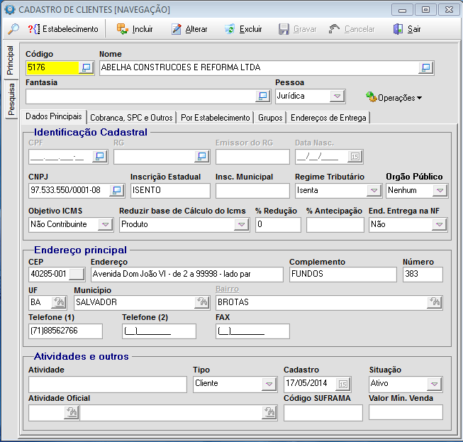

Identificação Cliente |
  
|
Identificação Cliente |
|

Identificação do Cadastral:
A linha superior da tela de edição do cadastro de cliente é usada para identificar o cliente, possui os seguintes campos:
●Código. Esta informação é um número sequencial único, geralmente criado automaticamente pelo sistema. No entanto, você pode configurar em <parâmetros Gerais do Usuário> para que também seja digitado.
●Razão Social ou Nome. O nome do cliente nunca poderá ficar em branco. Pelo menos uma letra deve ser informada.
●Nome Fantasia ou Apelido. Quando pessoa física é pedido o apelido ou o nome pelo qual a pessoa é conhecida. Quando a pessoa é jurídica é pedido o nome fantasia. Se foi configurado que o nome fantasia é usado para acesso ao cliente, não poderá haver mais de um cliente com a mesma fantasia.
●Tipo de Pessoa. Há três opções para este campo: Masculina ou Feminina ou Jurídica. Quando é marcado Pessoa Masculina ou Feminina é liberado os campos para que seja registrada as informações de pessoa Física. (RG , Emissor do RG e Data Nasc.)
Outras informações que também servem como identificação do cliente:
Impostos. Todos as informações são configurações aplicadas diretamente ao cliente e afeta diretamente ao cálculo dos impostos das Notas Fiscais e ou registro de receita.
●CNPJ, CPF ou Código do Registro Federal. Esta deve ser uma informação única para identificação do cliente.
●País. Quando o País é o BRASIL, a identificação do cliente é o CNPJ ou CPF. Quando é outro País a identificação é um código alfa-numérico.
●Inscrição Estadual. Deve conter apenas numeros quando tiver se for ISENTO o sistema preenche o campo com a inscrição "ISENTO"
●Regime Tributário. Há seis opções para este campo: Micro , Pequeno Porte, Isento, Simples Nacional, EP - Especial e Normal.
●Órgão Publico. Há quatro opções para este campo: Nenhum, Estadual, Municipal e Federal. Será usado para emissão COMPRA LEGAL somente se for Estadual, Municipal ou Federal
●Objetivo ICMS. Há duas opções para este campo: Não contribuinte e Contribuinte.
Outras informações relevantes do cliente:
• TIPO. Caso o cliente também é fornecedor é possível manter sincronizado as informações cadastrais.
• CEP ou Código Postal. Quando o cliente é do BRASIL é possível consultar trazer as informações cadastrais do cliente acessando alguns dos provedores destas informações.